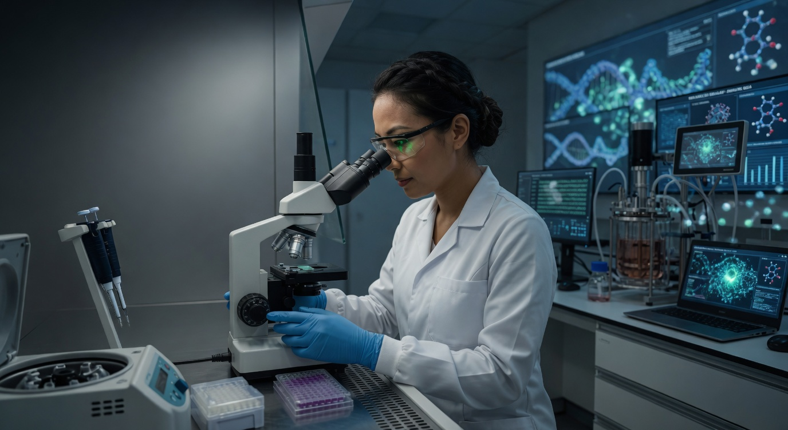

farmacêutica Brasileira
Avanços da biotecnologia que transformam vidas
Na Biolab, combinamos ciência de ponta com inovação responsável para desenvolver soluções que impactam a saúde humana
veja mais
Na Biolab, combinamos ciência de ponta com inovação responsável para desenvolver soluções que impactam a saúde humana
veja mais
Pesquisa, desenvolmento e compromisso com a vida. É assim que entregamos qualidade em cada produto

A confiança de quem vive a prática clínica todos os dias
"A combinação entre ciência e tecnologia se reflete em produtos confiáveis e eficientes"